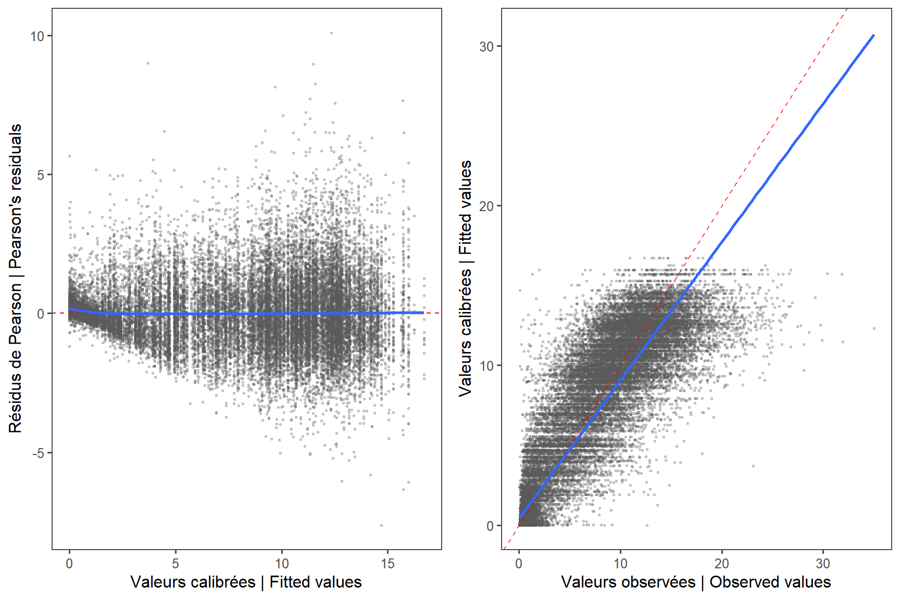

Spawning
2024-12-12
# SET-UP##### my packages ################################################################################
## CRAN
cran.packages <- c('tidyverse','boot','magrittr','ggpmisc','ggpubr','ggthemes','mgcv',
'fields', 'inlabru', 'sf', 'PresenceAbsence', 'verification', 'raster',
'scales', 'nlme','nls.multstart', 'stringr', 'ggforce',"readxl", "marmap")
install.this <- cran.packages[!(cran.packages %in% utils::installed.packages()[,"Package"])]
if(length(install.this)>=1) install.packages(install.this)
dummy <- lapply(cran.packages, require, character.only = TRUE)
## github
git.packages <- c('catchR','DFOdata','CCAM', 'INLA')
install.this <- git.packages[!(git.packages %in% utils::installed.packages()[,"Package"])]
if('catchR' %in% install.this) devtools::install_github("iml-assess/catchR@eli_parallel")
if('DFOdata' %in% install.this) devtools::install_github("iml-assess/DFOdata")
if('CCAM' %in% install.this) devtools::install_github("elisvb/CCAM")
if('INLA' %in% install.this)install.packages("INLA",repos=c(getOption("repos"),INLA="https://inla.r-inla-download.org/R/stable"), dep=TRUE)
dummy <- lapply(git.packages, require, character.only = TRUE)
##### source R directory ############################################################################
#invisible(sapply(list.files(pattern="[.]R$", path="R/", full.names=TRUE), source))
##### my ggplot theme ################################################################################
theme_set(theme_mackerel()) # theme_mackerel from catchR
update_geom_defaults("line", list(size = 1)) # no idea why somethimes I get fat lines otherwise
##### passwords databases #############################################################################
source("bdOracle.R")
source(paste0("R/",my.year,"/utils/basemap.R")) #if error "plot new has not been call", restart R, package compatibility issues
source(paste0("R/",my.year,"/utils/mackerel_fun_incubation.R")) # Mackerel incubation .
source(paste0("R/",my.year,"/utils/spatial_projections.R"))#
source(paste0("R/",my.year,"/utils/extract_biochem.R"))
source(paste0("R/",my.year,"/utils/extract_T0_10.R"))
source(paste0("R/",my.year,"/INLA/Mesh.R"))
source(paste0("R/",my.year,"/INLA/INLA_ZAG_covar_Stations.R"))
source(paste0("R/",my.year,"/INLA/INLA_ZAG_covar_Stations_CV.R"))
source(paste0("R/",my.year,"/utils/nlme_boot.R"))
source(paste0("R/",my.year,"/INLA/INLA_tw_covar_Stations.R"))
source(paste0("R/",my.year,"/INLA/INLA_tw_covar_Stations_CV.R"))
source(paste0('R/',my.year,'/INLA/plotSpatialFieldCL.R'))
source(paste0('R/',my.year,'/INLA/plotSmoother.R'))
source(paste0('R/',my.year,'/INLA/model_validation.R'))
source(paste0('R/',my.year,'/INLA/get_prediction_grid.R'))
source(paste0('R/biochem/PL_Get_SampleID_Batch.R'))
source(paste0('R/biochem/PL_Get_Counts_Batch.R'))
source(paste0('R/biochem/PL_Read_Filter.R'))
source(paste0('R/biochem/PL_Taxonomic_Grouping.R'))
log10p1_trans = function() scales::trans_new("log10p1", transform=function(x) log10(x+1), inverse=function(x) (10^x)-1)#inverse function is necessary for legend
#source(paste0("R/",year_to_report,"/INLA/getvar.R")) # needs to be retoughtnew=F
N=100
load(file=paste0("data/",my.year,"/DEP.RData"))
load(file=paste0("data/",my.year,"/eggt1.RData"))
dat=eggt1
1 Read
#prop_spawn(year,year=year, dat = egg, cv = T) # dat is used to calculate median date and in split with trajet.
date.med <- eggt1 %>% filter(year !=1979) %>%
ungroup() %>%
group_by(year) %>%
dplyr::summarize(
date.med = round(median(doy, na.rm = T)),
mindoy = min(doy, na.rm = T),
maxdoy = max(doy, na.rm = T)
)
date.med <- date.med %>% mutate(date.med = ifelse(year == 1979, 166, date.med)) # from Ouellet et al. 1987
date.med <- as.data.frame(date.med)
bio <- get.bio(species = "maquereau", user = my.env$bio.username, password = my.env$bio.password)
bio.backup <- bio
bio <- bio %>% mutate(doy = as.numeric(format(as.Date(paste(year, month, day, sep = "/"), format = "%Y/%m/%d"), format = "%j"))) %>%
dplyr::filter(
!is.na(weight), !is.na(wgonad), !is.na(doy),
weight > 0, weight > wgonad, matur != 0, nafo %in% c("4T", "4V", "4W")
)
bio %<>% mutate(gsi = (wgonad / weight) * 100)
#remove outliers
df <- bio %>%
dplyr::filter(!is.na(gsi), matur > 4, year > 1978, !(gsi > 5 & doy > 250), !(gsi > 10 & doy > 200 & year %in% c(1994, 1999, 2018, 2019, 2020)), !(year == 1999 & matur > 6 & nafo == "4V"), !(nafo!="4T" & matur > 6), !(nafo!="4T" & matur>6 & month >7), length.frozen > 0.2, weight > 0.03, gsi < 40) %>%
group_by(agef) %>% filter(weight>quantile(weight,0.001), weight<quantile(weight,0.999))%>%
arrange(year)
#removing gsi > 40 is jsutified because it does not concur with stages. Stage 1 and 8 at > 40% is unlikely. Maybe a 0 missing in weight.
df <- df %>%
arrange(year) %>%
mutate(year = as.numeric(as.character(year))) %>% filter(!is.na(gsi), !is.na(doy), !is.na(year)) %>% mutate(maturcat = ifelse(!is.na(matur) & matur == 6, "6", ifelse(is.na(matur), "other", "other"))) %>% ungroup()
bio.backup %<>% mutate(gsi = (wgonad / weight) * 100)
bio.backup %>% filter(gsi < 50, matur %in% 5:6) %>% ggplot(aes(x=as.factor(month), y=gsi, fill=as.factor(matur)))+
geom_boxplot() + facet_wrap(~prov) + theme(legend.position="inside", legend.position.inside=c(0.8, 0.2))+
labs(x= "Mois | Month")
1.1 CHECKS
1.1.1 Check for outliers
df %>% filter(year %in% year_to_plot) %>% ggplot(aes(x=doy, y=gsi)) +geom_point(aes(col=maturcat)) + facet_wrap(~year) + scale_color_manual(values = c("green3", "grey")) 
1.1.2 Check data
table_prov<- df %>% group_by(year, nafo) %>% tally() %>% pivot_wider(names_from=nafo, values_from=n) %>% mutate(total=sum(`4T`,`4W`,`4V`, na.rm=T),
prop4T=round(`4T`/total,3),
prop4W=round(`4W`/total,3),
prop4V=round(`4V`/total, 3))
write.table(table_prov, paste0("results/",my.year,"/spawning/table_provenance_ech.txt"), row.names=F, sep="\t", dec=".")
ns<- table_prov %>% dplyr::select(-total) %>% pivot_longer(2:7) %>% mutate(type=ifelse(grepl(name, pattern="prop"), "Proportion", "n"),
region=ifelse(grepl(name, pattern="4T"), "4T",
ifelse(grepl(name, pattern="4V"), "4V",
ifelse(grepl(name, pattern="4W"), "4W", NA)))) %>% dplyr::select(-name) %>%
pivot_wider(names_from=type, values_from = value) %>%
ggplot(aes(x=year, y=n))+geom_bar( stat="identity", aes(fill=region)) + theme_few() + scale_fill_viridis_d(name="", direction=-1)+
theme(legend.position=c(0.85, 0.85)) #+ geom_text(data=table_prov , aes(x=year, y=1, label=total), angle=90)
ns + ylab("Nombre de poissons | Number of fish") + scale_x_continuous(name="Année | Year", breaks=seq(1980, max(df$year), 5))ggsave(paste0("img/",my.year,"/spawning/NsamplesBI.png"), width=6, height=5, dpi=600, units="in")
ns2<- df %>% group_by(year, matur) %>% tally() %>% pivot_wider(names_from=matur, values_from=n) %>%
pivot_longer(`5` :`8`) %>%
ggplot(aes(x=year, y=value))+geom_bar( stat="identity", aes(fill=name)) + theme_few() + scale_fill_viridis_d(name="",direction=-1)+
theme(legend.position=c(0.85, 0.85),
legend.background = element_blank()) #+ geom_text(data=table_prov , aes(x=year, y=1, label=total), angle=90)
ns2 + ylab("Nombre de poissons | Number of fish") + scale_x_continuous(name="Année | Year", breaks=seq(1980, max(df$year), 5))ggsave(paste0("img/",my.year,"/spawning/Nsamples_stagesBI.png"), width=6, height=5, dpi=600, units="in")
propdoy<- left_join(left_join(df %>% group_by(year,doy, matur) %>% tally() %>% pivot_wider(names_from=matur, values_from=n, values_fill=0),
df %>% group_by(year,doy) %>% tally()) %>% mutate(prop_stage6= `6` /n),
df %>% group_by(year, doy) %>% filter(matur=="6") %>% summarize(mgsi=mean(gsi, na.rm=T)))
write.table(propdoy, paste0("results/",my.year,"/spawning/proportion_stages_doy.txt"), row.names=F, sep="\t", dec=".")
nsy<- df %>% group_by(doy, year, matur) %>% tally() %>%
ggplot(aes(x=doy, y=n))+facet_wrap(~year) +geom_bar(linewidth=0.1,stat="identity", aes(fill=as.factor(matur),col=as.factor(matur)))+ theme_few() + scale_fill_viridis_d(name="",direction=-1)+ scale_color_viridis_d(name="",direction=-1)+
theme(legend.position=c(0.4, 0.05),legend.direction="horizontal",
legend.background = element_blank()) #+ geom_text(data=table_prov , aes(x=year, y=1, label=total), angle=90)
nsyEN <- nsy + ylab("Number of fish") + xlab("Day of year")
#ggsave(paste0("img/",year,"/spawning/Nsamples_stages",nameincl4X,"_yearEN.png"), width=10, height=6, dpi=600, units="in")
nsyFR <- nsy + ylab("Nombre de poissons") + xlab("Jour de l'ann\u00E9e")
#ggsave(paste0("img/",year,"/spawning/Nsamples_stages",nameincl4X,"_yearFR.png"), width=10, height=6, dpi=600, units="in")
mdoy6<- df %>% group_by(year) %>% filter(matur==6) %>% summarize(mdoy_stage6=mean(doy),
sddoy_stage6=sd(doy))
1.1.3 Model
#evaluate starting values
if(new){
start.val <- nls.multstart::nls_multstart(gsi ~ SSlogis(doy, Asym, xmid, scal),
data = df,
start_lower = c(Asym = min(df %>% filter(matur == 5) %>% dplyr::select(gsi)), xmid = min(df$doy), scal = -100),
start_upper = c(Asym = max(df$gsi), xmid = max(df$doy), scal = 100),
iter = 500,
supp_errors = "Y"
)
nlme.fixAR <- nlme(gsi ~ SSlogis(doy, Asym, xmid, scal),
data = df,
fixed = Asym + xmid + scal ~ 1,
start = coefficients(start.val),
correlation = corAR1(),
random = Asym + xmid + scal ~ 1 | year
)
#df<- df %>% mutate(year=as.factor(year), group=as.numeric(year))
#test<- glm(gsi/100 ~ doy |year, family="binomial", data=df, correlation=corAR1())
#library(glmmTMB)
#tmb1<- glmmTMB(gsi/100 ~ doy + ar1(year + 0 | group), data=df, family=beta_family(link="logit"))
#plot(residuals(tmb1, type="pearson") ~ fitted(tmb1))
#library(DHARMa)
#plot(simulateResiduals(tmb1))
#newdata=data.frame(doy=seq(100,300, 5))
#newdata$pred<- predict(test,newdata)
nlme_coefAR = as_tibble(coef(nlme.fixAR), rownames = 'year')
#keep starting values in case of needed for update
save(nlme.fixAR,start.val,df, nlme_coefAR, file = paste0("results/", my.year,"/spawning/nlmeAR", my.year,".RData"))
} else{load(paste0("results/", my.year,"/spawning/nlmeAR", my.year,".RData"))}
predtimes <- expand_grid(year = unique(df$year), doy = seq(0.5, 364.5)) # doy aligned to calculate probability at doy
nlme.fixpredsAR1 <- predtimes %>%
mutate(fitted =predict(nlme.fixAR, newdata = predtimes,interval = 'confidence')) %>%
group_by(year) %>%
mutate(
slope = c(diff(fitted, lag = 1), NA),
prob = slope / sum(slope, na.rm = T)
) %>%
filter(!is.na(prob)) %>%
mutate(
probcum0025 = cumsum(prob),
#probcum9725 = rev(cumsum(rev(prob))),
doy = ceiling(doy)
) # get back the real doy
1.1.3.1 Check
valid<- data.frame(resid=residuals(nlme.fixAR , type="normalized"), mu=fitted(nlme.fixAR), obs=df$gsi, year=df$year)
h<- ggplot(valid, aes(x=mu, y=resid))+geom_point(col="grey35", size=0.5, alpha=0.3) +theme_few() + geom_hline(yintercept=0, col="red", lty=2)+ geom_smooth()
f<- ggplot(valid, aes(x=df$gsi, y=mu))+geom_point(col="grey35", size=0.5, alpha=0.3)+theme_few() +geom_abline(slope=1, intercept=0, col="red", lty=2)+ geom_smooth(method="lm")
hEN <- h+ ylab("Résidus de Pearson | Pearson's residuals") + xlab("Valeurs calibrées | Fitted values")
fEN <- f+ ylab("Valeurs calibrées | Fitted values") + xlab("Valeurs observées | Observed values")
ggarrange(hEN, fEN, ncol=2)
h<- ggplot(valid, aes(x=mu, y=resid))+geom_point(col="grey35", size=0.5) +theme_few() + facet_wrap( ~ year) +geom_hline(yintercept=0, col="red", lty=2)
f<- ggplot(valid, aes(x=df$gsi, y=mu))+geom_point(col="grey35", size=0.5)+theme_few() + facet_wrap( ~ year) +geom_abline(slope=1, intercept=0, col="red", lty=2)+ geom_smooth(method="lm")
hEN <- h+ ylab("Résidus de Pearson | Pearson's residuals") + xlab("Valeurs calibrées | Fitted values")
ggarrange(hEN, fEN, ncol=2)
ggplot(valid, aes(x=year, y=resid))+geom_point(col="grey35", size=0.5) +theme_few() +geom_hline(yintercept=0, col="red", lty=2) + ylab("Résidus de Pearson | Pearson's residuals") + xlab("Année | Year")1.1.3.2 Confidence intervals
if(new){
start<- Sys.time()
yvals2 <- replicate(n=N, nlme_boot(fitted=nlme.fixAR, data=df, newframe=nlme.fixpredsAR1)) # temporary fix for problem in data length. save df inside Rdata to avoid. # ncluster cannot be larger than 2, because mremory is exceeded.
#started at 14:44 for 100 iterations
end<- Sys.time()
end-start
yout<-as.data.frame(apply(yvals2,MARGIN=c(1, 2) ,FUN=function(x) unlist(x)))
gsi_pred<- bind_cols(yout[,seq(1,N*2, 2)],nlme.fixpredsAR1) %>% pivot_longer(1:N) %>% group_by(year, doy)
#figure pour la prsésentation
fp<- ggplot(gsi_pred %>% filter(year==1999)) + geom_line(aes(x=doy, y=value, group=name)) +geom_line(aes(x=doy, y=fitted),lwd=1.5, col="blue") + geom_vline(xintercept = 10, lty=2, col="red") +ggtitle("1999")
fpEN<- fp + xlab("Day of year") +ylab("Gonadosomatic index")
#is already grouped bu year and doy
gsi_pred<- gsi_pred %>% summarize(gsiIClwr=quantile(value,0.025, na.rm=T), gsiICupr=quantile(value, 0.975, na.rm=T)) %>% mutate(doy = ceiling(doy))
prob_pred<- bind_cols(yout[,seq(2,N*2, 2)],nlme.fixpredsAR1) %>% pivot_longer(1:N) %>% filter(!is.na(value)) %>% group_by(year, doy) %>% summarize(propIClwr=quantile(value,0.025), propICupr=quantile(value, 0.975),
propsd=sd(value)) %>% mutate(doy = ceiling(doy))
nlme.fixpredsAR1<- list(nlme.fixpredsAR1, gsi_pred, prob_pred) %>% purrr::reduce(full_join)
save(nlme.fixpredsAR1, file = paste0("results/",my.year,"/spawning/predicted_propspawn_doy", my.year,".RData"))
} else{load(file = paste0("results/",my.year,"/spawning/predicted_propspawn_doy", my.year,".RData"))
}
1.1.3.3 Export
###########tables for resdoc#############
tabl1 <- left_join(nlme_coefAR %>% mutate(year = as.numeric(year)), full_join(
nlme.fixpredsAR1 %>% group_by(year) %>% slice(which.max(prob)) %>% rename(doytop = doy) %>% dplyr::select(year, doytop),
list(
nlme.fixpredsAR1 %>% group_by(year) %>% filter(probcum0025 > 0.025 & probcum0025 < 0.975) %>% slice(which.min(doy)) %>% rename(doymin = doy) %>% dplyr::select(year, doymin),
nlme.fixpredsAR1 %>% group_by(year) %>% filter(probcum0025 > 0.025 & probcum0025 < 0.975) %>% slice(which.max(doy)) %>% rename(doymax = doy) %>% dplyr::select(year, doymax),
nlme.fixpredsAR1 %>% group_by(year) %>% filter(probcum0025 > 0.15 & probcum0025 < 0.85) %>% slice(which.min(doy)) %>% rename(doymin70 = doy) %>% dplyr::select(year, doymin70),
nlme.fixpredsAR1 %>% group_by(year) %>% filter(probcum0025 > 0.15 & probcum0025 < 0.85) %>% slice(which.max(doy)) %>% rename(doymax70 = doy) %>% dplyr::select(year, doymax70)
) %>% purrr::reduce(full_join),
) %>%
mutate(duration = doymax - doymin))
tabl2 <- left_join(date.med, nlme.fixpredsAR1) %>%
filter(date.med == doy) %>%
mutate(prob_at_med = prob) %>%
dplyr::select(year, date.med, prob_at_med, propIClwr,propICupr, propsd)
tabl_out <- left_join(tabl1, tabl2) %>% mutate(survey_date= ifelse(date.med < doymin70, "Early survey",
ifelse(date.med > doymax70, "Late survey", "During 70 % of spawning")))
write.table(tabl_out, paste0("results/",my.year,"/spawning/table_nlmeAR_", my.year, ".txt"), row.names = F, sep = "\t", dec = ".")
nlme.fixpredsAR <- full_join(df, nlme.fixpredsAR1)
kable(tabl_out)| year | Asym | xmid | scal | doytop | doymin | doymax | doymin70 | doymax70 | duration | date.med | prob_at_med | propIClwr | propICupr | propsd | survey_date |
|---|---|---|---|---|---|---|---|---|---|---|---|---|---|---|---|
| 1979 | 19.87848 | 168.6284 | -12.428735 | 169 | 123 | 213 | 147 | 189 | 90 | NA | NA | NA | NA | NA | NA |
| 1980 | 17.30217 | 176.9699 | -12.980485 | 177 | 129 | 224 | 154 | 198 | 95 | NA | NA | NA | NA | NA | NA |
| 1981 | 13.17202 | 184.4091 | -6.112210 | 184 | 162 | 206 | 174 | 194 | 44 | NA | NA | NA | NA | NA | NA |
| 1982 | 17.44351 | 172.4362 | -16.138419 | 172 | 113 | 231 | 144 | 199 | 118 | NA | NA | NA | NA | NA | NA |
| 1983 | 13.85065 | 173.9845 | -5.173689 | 174 | 155 | 192 | 165 | 182 | 37 | 178 | 0.0416979 | 0.0366101 | 0.0429872 | 0.0016464 | During 70 % of spawning |
| 1984 | 18.31483 | 169.0300 | -14.359336 | 169 | 116 | 221 | 144 | 193 | 105 | 176 | 0.0164225 | 0.0143995 | 0.0165191 | 0.0004950 | During 70 % of spawning |
| 1985 | 20.80333 | 165.4026 | -14.935458 | 165 | 111 | 219 | 139 | 190 | 108 | 178 | 0.0140817 | 0.0125210 | 0.0144585 | 0.0005449 | During 70 % of spawning |
| 1986 | 16.63232 | 171.2667 | -13.557847 | 171 | 122 | 220 | 148 | 194 | 98 | 175 | 0.0180925 | 0.0162782 | 0.0185203 | 0.0005812 | During 70 % of spawning |
| 1987 | 13.88174 | 171.9063 | -11.601374 | 172 | 129 | 213 | 152 | 191 | 84 | 172 | 0.0215455 | 0.0197949 | 0.0222124 | 0.0006540 | During 70 % of spawning |
| 1988 | 14.43570 | 174.2940 | -6.875398 | 174 | 149 | 198 | 162 | 185 | 49 | 173 | 0.0360260 | 0.0335688 | 0.0382241 | 0.0012534 | During 70 % of spawning |
| 1989 | 21.36459 | 162.3855 | -14.954247 | 162 | 108 | 216 | 136 | 187 | 108 | 174 | 0.0144295 | 0.0125371 | 0.0149018 | 0.0006466 | During 70 % of spawning |
| 1990 | 14.25675 | 175.7345 | -9.834480 | 176 | 140 | 211 | 159 | 192 | 71 | 170 | 0.0233729 | 0.0224690 | 0.0241203 | 0.0004208 | During 70 % of spawning |
| 1991 | 21.42552 | 163.2775 | -17.845510 | 163 | 98 | 228 | 132 | 193 | 130 | 171 | 0.0133741 | 0.0118410 | 0.0149186 | 0.0008178 | During 70 % of spawning |
| 1992 | 14.92318 | 175.2588 | -11.795112 | 175 | 132 | 217 | 155 | 195 | 85 | 173 | 0.0209990 | 0.0188380 | 0.0219912 | 0.0008634 | During 70 % of spawning |
| 1993 | 17.45477 | 173.1908 | -13.877330 | 173 | 122 | 223 | 149 | 196 | 101 | 170 | 0.0177772 | 0.0165894 | 0.0183965 | 0.0005148 | During 70 % of spawning |
| 1994 | 13.68858 | 176.3580 | -11.145021 | 176 | 136 | 216 | 157 | 195 | 80 | 168 | 0.0195493 | 0.0186761 | 0.0201950 | 0.0004423 | During 70 % of spawning |
| 1995 | 13.98390 | 177.7990 | -10.159952 | 178 | 141 | 214 | 160 | 194 | 73 | NA | NA | NA | NA | NA | NA |
| 1996 | 17.66986 | 168.7081 | -11.032983 | 169 | 128 | 208 | 150 | 187 | 80 | 173 | 0.0218199 | 0.0188876 | 0.0227590 | 0.0010580 | During 70 % of spawning |
| 1997 | 15.44268 | 174.8676 | -8.486577 | 175 | 144 | 205 | 160 | 189 | 61 | NA | NA | NA | NA | NA | NA |
| 1998 | 16.76371 | 166.3245 | -10.405210 | 166 | 128 | 203 | 148 | 183 | 75 | 167 | 0.0239965 | 0.0213047 | 0.0247563 | 0.0008326 | During 70 % of spawning |
| 1999 | 23.62881 | 145.9494 | -15.273898 | 146 | 90 | 201 | 119 | 171 | 111 | 173 | 0.0081370 | 0.0072314 | 0.0095027 | 0.0005597 | Late survey |
| 2000 | 15.27501 | 170.8239 | -11.149828 | 171 | 130 | 211 | 151 | 189 | 81 | 173 | 0.0222061 | 0.0196176 | 0.0228645 | 0.0008328 | During 70 % of spawning |
| 2001 | 12.77578 | 171.9918 | -6.842968 | 172 | 147 | 196 | 160 | 183 | 49 | 166 | 0.0303311 | 0.0291206 | 0.0314204 | 0.0006133 | During 70 % of spawning |
| 2002 | 15.34635 | 172.0129 | -12.568657 | 172 | 126 | 217 | 150 | 193 | 91 | 170 | 0.0197612 | 0.0181348 | 0.0203560 | 0.0005739 | During 70 % of spawning |
| 2003 | 16.57877 | 170.3274 | -8.970924 | 170 | 137 | 202 | 155 | 185 | 65 | 171 | 0.0278215 | 0.0250593 | 0.0285857 | 0.0008690 | During 70 % of spawning |
| 2004 | 17.88288 | 170.3540 | -12.690668 | 170 | 124 | 216 | 148 | 191 | 92 | 171 | 0.0196843 | 0.0173623 | 0.0205992 | 0.0009340 | During 70 % of spawning |
| 2005 | 18.98100 | 172.8019 | -10.698732 | 173 | 134 | 211 | 154 | 190 | 77 | 170 | 0.0229672 | 0.0216473 | 0.0236592 | 0.0005301 | During 70 % of spawning |
| 2006 | 18.11384 | 165.4067 | -10.355334 | 165 | 127 | 202 | 147 | 182 | 75 | 186 | 0.0102283 | 0.0095402 | 0.0102860 | 0.0002150 | Late survey |
| 2007 | 13.86718 | 177.4448 | -6.953787 | 177 | 152 | 202 | 165 | 189 | 50 | 177 | 0.0358995 | 0.0325152 | 0.0377100 | 0.0013014 | During 70 % of spawning |
| 2008 | 12.79179 | 175.8556 | -5.917996 | 176 | 154 | 197 | 166 | 185 | 43 | 177 | 0.0418273 | 0.0376223 | 0.0435083 | 0.0014579 | During 70 % of spawning |
| 2009 | 12.52185 | 174.0097 | -7.878852 | 174 | 145 | 202 | 160 | 187 | 57 | 168 | 0.0275230 | 0.0256942 | 0.0295016 | 0.0010128 | During 70 % of spawning |
| 2010 | 15.04594 | 170.1637 | -9.207301 | 170 | 136 | 203 | 154 | 185 | 67 | 166 | 0.0258048 | 0.0245326 | 0.0270889 | 0.0006384 | During 70 % of spawning |
| 2011 | 17.40410 | 167.9427 | -7.294382 | 168 | 141 | 194 | 155 | 180 | 53 | 166 | 0.0336598 | 0.0305132 | 0.0357183 | 0.0014242 | During 70 % of spawning |
| 2012 | 16.50654 | 162.0105 | -8.668062 | 162 | 130 | 193 | 147 | 176 | 63 | 168 | 0.0256506 | 0.0211165 | 0.0281688 | 0.0018654 | During 70 % of spawning |
| 2013 | 15.24422 | 168.6485 | -8.189794 | 169 | 139 | 198 | 154 | 182 | 59 | 167 | 0.0302096 | 0.0275096 | 0.0309678 | 0.0009880 | During 70 % of spawning |
| 2014 | 16.68055 | 166.6999 | -7.849516 | 167 | 138 | 194 | 153 | 179 | 56 | 166 | 0.0317752 | 0.0278831 | 0.0336887 | 0.0014823 | During 70 % of spawning |
| 2015 | 15.87514 | 172.1781 | -7.196117 | 172 | 146 | 198 | 160 | 184 | 52 | 167 | 0.0305974 | 0.0287837 | 0.0325659 | 0.0010229 | During 70 % of spawning |
| 2016 | 19.91707 | 163.9509 | -11.545784 | 164 | 122 | 205 | 144 | 183 | 83 | 169 | 0.0206470 | 0.0183833 | 0.0213547 | 0.0008289 | During 70 % of spawning |
| 2017 | 14.20564 | 174.1184 | -4.766135 | 174 | 157 | 191 | 166 | 181 | 34 | 164 | 0.0200444 | 0.0203722 | 0.0228176 | 0.0005992 | Early survey |
| 2018 | 13.24604 | 175.0166 | -5.397768 | 175 | 155 | 194 | 166 | 183 | 39 | 172 | 0.0428556 | 0.0388585 | 0.0474507 | 0.0020828 | During 70 % of spawning |
| 2019 | 15.30224 | 176.4515 | -7.115972 | 176 | 150 | 202 | 164 | 188 | 52 | 162 | 0.0144151 | 0.0138334 | 0.0162192 | 0.0006569 | Early survey |
| 2020 | 16.00171 | 172.7190 | -2.416524 | 173 | 164 | 181 | 169 | 176 | 17 | NA | NA | NA | NA | NA | NA |
| 2021 | 13.87287 | 167.1134 | -6.165775 | 167 | 145 | 189 | 156 | 177 | 44 | 169 | 0.0395918 | 0.0351090 | 0.0407122 | 0.0016291 | During 70 % of spawning |
| 2022 | 17.66248 | 161.2610 | -9.339120 | 161 | 127 | 194 | 145 | 176 | 67 | 171 | 0.0206312 | 0.0139210 | 0.0300410 | 0.0040431 | During 70 % of spawning |
| 2023 | 17.78080 | 162.6776 | -9.252430 | 163 | 129 | 196 | 147 | 178 | 67 | 172 | 0.0211736 | 0.0175228 | 0.0228744 | 0.0013366 | During 70 % of spawning |
| 2024 | 12.06124 | 164.6106 | -3.854380 | 165 | 150 | 178 | 158 | 170 | 28 | 174 | 0.0192266 | 0.0166539 | 0.0191131 | 0.0006932 | Late survey |
1.1.4 Results
1.1.4.1 Spawning season
##########plots of fit with proportion###########
scaling.factor <- 4 # for second axis
xdoy <- seq(126, 350, 30)
sp3 <- ggplot(nlme.fixpredsAR %>% filter(year >= my.year-10)) +
theme_few() + theme(legend.position = "none", axis.text.x = element_text(angle = 90)) +
coord_cartesian(xlim=c(100, 300))+
geom_point(aes(x = doy, y = gsi, col = maturcat), size = 0.3) +
scale_color_manual(values = c("green3", "grey")) +
geom_line(aes(x = doy, y = fitted), size = 0.5) +
geom_ribbon(aes(ymin=gsiIClwr, ymax=gsiICupr, x=doy), alpha=0.5, col="black", fill="black")+
geom_line(aes(x = doy, y = prob * 100 * scaling.factor), col = "red", size = 0.5) +
geom_ribbon(aes(ymin=propIClwr* 100 * scaling.factor, ymax=propICupr* 100 * scaling.factor, x=doy), alpha=0.5, col = "red", fill="red")+
geom_vline(data=date.med %>%filter(year >= my.year-5), aes(xintercept=date.med), lty=2) +
facet_wrap(~year, ncol = 3)
Sys.setlocale("LC_ALL", "English.utf8")
## [1] "LC_COLLATE=English_United States.utf8;LC_CTYPE=English_United States.utf8;LC_MONETARY=English_United States.utf8;LC_NUMERIC=C;LC_TIME=English_United States.utf8"
spEN3 <- sp3 +
scale_y_continuous(
name = "Gonadosomatic index",
sec.axis = sec_axis(~ . / scaling.factor, name = "Percentage of eggs spawned daily")
) +
theme(legend.position = "none", axis.text.x = element_text(angle = 90)) +
scale_x_continuous(name="Day of year",breaks=xdoy, labels=format(as.Date(xdoy, origin = "2001-01-01"),'%b-%d')) +ylab("Day of year")
ggsave(paste0("img/",my.year,"/spawning/nlme_spawning_proportion_", my.year,"EN3.png"), width = 8, height = 6, dpi = 600, units = "in")
spEN3
spBI3<- sp3 + scale_y_continuous(
name = "Indice gonado-somatique\nGonadosomatic index",
sec.axis = sec_axis(~ . / scaling.factor, name = "Percentage of eggs spawned daily\nPourcentage quotidien d'oeufs pondus")
) +
theme(legend.position = "none", axis.text.x = element_text(angle = 90)) +
xlab("Jour de l'ann\u00E9e\nDay of year")
ggsave(paste0("img/",my.year,"/spawning/nlme_spawning_proportion_", my.year, "BI3.png"), width = 8, height = 6, dpi = 600, units = "in")
1.1.4.2 Spawning season and survey timing
date.medfig<- date.med %>% mutate(mindoy=ifelse(year==1979, date.med, mindoy), maxdoy=ifelse(year==1979, date.med,maxdoy)) %>% dplyr::rename(doytop=date.med)
tabl_outfig <- unique( tabl_out %>% dplyr::select(year, doymin, doymax,doytop, doymin70, doymax70))
pt2 <- ggplot(data=tabl_outfig, aes(y = doytop, x = year)) +
geom_line()+
geom_ribbon(aes(ymin=doymin70, ymax=doymax70), col="goldenrod2", fill="goldenrod2", alpha=0.3) +
geom_ribbon(aes(ymin=doymin, ymax=doymax), col="gold", fill="gold", alpha=0.3) +
geom_point(data=date.medfig ,aes(y=doytop,x=year)) +
geom_errorbar(data=date.medfig,aes(ymin = mindoy, ymax = maxdoy, y=doytop,x=year)) +
scale_x_continuous(breaks=seq(1975, my.year, 5))+
#scale_y_continuous(limits = c(150, 200)) +
theme_few()+
theme(legend.position="bottom",
legend.key.width = unit(30, "pt"))
pt2EN <- pt2+ylab("Day of year") + xlab("Year")
ggsave(paste0("img/",my.year,"/spawning/spawning_season_", my.year, "EN.png"), width = 7, height = 5, dpi = 600, units = "in")
pt2FR <- pt2+ylab("Jour de l'ann\u00E9e") + xlab("Ann\u00E9e")
ggsave(paste0("img/",my.year,"/spawning/spawning_season_", my.year, "FR.png"), width = 7, height = 5, dpi = 600, units = "in")
pt2BI <- pt2+ylab("Jour de l'ann\u00E9e / Day of year") + xlab("Ann\u00E9e / Year")
ggsave(paste0("img/",my.year,"/spawning/spawning_season_", my.year,"BI.png"), width = 7, height = 5, dpi = 600, units = "in")
y <- c(100,120,140,160,180,200,220,240)
Sys.setlocale("LC_ALL", "English")
## [1] "LC_COLLATE=English_United States.1252;LC_CTYPE=English_United States.1252;LC_MONETARY=English_United States.1252;LC_NUMERIC=C;LC_TIME=English_United States.1252"
pt2dayEN <- pt2 + scale_y_continuous(breaks=y, labels=format(as.Date(y, origin = "2001-01-01"),'%B-%d')) +ylab("Day of year") + xlab("Year")
ggsave(paste0("img/",my.year,"/spawning/spawning_season_", my.year, "EN2.png"), width = 7, height = 5, dpi = 600, units = "in")
pt2dayBI <- pt2 + scale_y_continuous(breaks=y, labels=format(as.Date(y, origin = "2001-01-01"),'%B-%d')) +ylab("Jour de l'ann\u00E9e | Day of year") + xlab("Ann\u00E9e | Year")
ggsave(paste0("img/",my.year,"/spawning/spawning_season_", my.year, "BI2.png"), width = 7, height = 5, dpi = 600, units = "in")
Sys.setlocale("LC_ALL", "French_Canada.utf8")
## [1] "LC_COLLATE=French_Canada.utf8;LC_CTYPE=French_Canada.utf8;LC_MONETARY=French_Canada.utf8;LC_NUMERIC=C;LC_TIME=French_Canada.utf8"
pt2dayFR <- pt2 + scale_y_continuous(breaks=y, labels=format(as.Date(y, origin = "2001-01-01"),'%d-%B')) +ylab("Jour de l'ann\u00E9e") + xlab("Ann\u00E9e")
ggsave(paste0("img/",my.year,"/spawning/spawning_season_", my.year, "FR2.png"), width = 7, height = 5, dpi = 600, units = "in")
pt2dayEN
1.1.5 Bias indicators
1.1.5.1 Proportion of stage 6
PESd<- read.delim(paste0("results/",my.year,"/spawning/table_nlmeAR_",my.year,".txt")) %>% dplyr::select(year, xmid)
propstages<- read.delim(paste0("results/",my.year,"/spawning/proportion_stages_doy.txt"))
# propstages<- read.delim(paste0("results/",year,"/spawning/proportion_stages_doy.txt")) %>% dplyr::select(-n, -prop_stage6) %>% pivot_longer(X5:X8, names_to="stages", values_to="n") %>%
# mutate(stages=recode_factor(stages, X5 = "5",X6 = "6",X7 = "7",X8 = "8"))
#2. proportion of stages weighted for all n for a year
newprop <- left_join(propstages %>% dplyr::select(-n),
propstages %>% group_by(year) %>% tally(n)) %>%
mutate(prop_stage6 = X6/n) %>% ungroup() %>% dplyr::filter(prop_stage6>0.05)
newprop <- propstages %>% ungroup() %>% dplyr::filter(prop_stage6>0.05)
#weighted average of date, weight = proportion or N?
wa<- list(newprop %>% group_by(year) %>% summarize(maxstage6 =weighted.mean(doy, w=prop_stage6)) ,
newprop %>% group_by(year) %>% summarize(start6=min(doy, na.rm=T), end6=max(doy, na.rm=T)),
PESd %>% group_by(year)) %>% purrr::reduce(left_join) %>%
mutate(for_fill= ifelse(year %in% c(1999, 1991), "fit",
ifelse(year %in% c(2006, 2017,2019), "timing",
ifelse(year %in% c(2022), "uncertain", "OK"))))
sd_diff<- wa %>% filter(year!=2022)%>% reframe(meandiff_xmid6= sd(xmid-maxstage6, na.rm=T) )
bias<- ggplot(data=wa,aes(x=xmid, y=maxstage6)) +geom_abline(intercept=0,slope=1, col="red", lty=2)+geom_abline(intercept=-1.96*sd_diff$meandiff_xmid6,slope=1, col="black", lty=2)+geom_abline(intercept=1.96*sd_diff$meandiff_xmid6,slope=1, col="black", lty=2)+geom_label(aes(label=year, fill=for_fill), alpha=0.5)+
scale_fill_manual(values=c("#ff6a6a","white", "dodgerblue", "seagreen3"), guide="none") +theme_few()
biasEN<- bias + ylab("Day of year of maximum proportion of stage 6") + xlab("Day of year of peak spawning (xmid)")
ggsave(paste0("img/",my.year,"/spawning/bias_indicator_spawning_EN.png"), width=6, height=5, dpi=600, units="in")
biasEN
biasFR <- bias + ylab("Jour de l'année de la proportion maximale de stade 6") + xlab("Jour de l'année du pic de ponte (xmid)")
ggsave(paste0("img/",my.year,"/spawning/bias_indicator_spawning_FR.png"), width=6, height=5, dpi=600, units="in")
biasBI<- bias + ylab("Jour de l'année de la proportion maximale de stade 6\nDay of year of maximum proportion of stage 6") + xlab("Jour de l'année du pic de ponte (xmid)\nDay of year of peak spawning (xmid)")
ggsave(paste0("img/",my.year,"/spawning/bias_indicator_spawning_BI.png"), width=6, height=5, dpi=600, units="in")
1.1.5.2 Proportion of larvae
load(paste0("results/",my.year,"/spawning/predicted_propspawn_doy", my.year, ".RData"))
tabAR<- read.delim(paste0("results/",my.year,"/spawning/table_nlmeAR_", my.year, ".txt")) %>% dplyr::select(year, date.med)
prop<- left_join(tabAR, nlme.fixpredsAR1) %>% group_by(year) %>% filter(doy < date.med) %>% summarize(prop=sum(prob))
df_prop_larvae<- full_join(prop, eggt1 %>% mutate(prop_larvae =maq_larvae /(maq_eggs_stage1_5 +maq_larvae)) %>%
group_by(year) %>% summarize(mean_prop_larvae=mean(prop_larvae, na.rm=T),
sd_prop_larvae = sd(prop_larvae, na.rm=T))) %>%
mutate(for_fill= ifelse(year %in% c(1999, 1991), "fit",
ifelse(year %in% c(2006, 2017,2019), "timing",
ifelse(year %in% c(2022), "uncertain", "OK"))))
pl2<- ggplot(data=df_prop_larvae, aes(x=prop, y=mean_prop_larvae))+geom_label(aes(label=year, fill=for_fill),alpha=0.5) + theme_few() +
scale_fill_manual(values=c("#ff6a6a","white", "dodgerblue", "seagreen3"), guide="none")+
theme(legend.title=element_blank())
pl1 <- ggplot(df_prop_larvae , aes(x=year, y=mean_prop_larvae)) +geom_point()+geom_errorbar(aes(ymin=ifelse(mean_prop_larvae-sd_prop_larvae <0, 0,mean_prop_larvae-sd_prop_larvae),
ymax=mean_prop_larvae+sd_prop_larvae)) +theme_few() + theme(legend.title=element_blank())
pl1EN<- pl1 + scale_x_continuous(name="Year", breaks=seq(1980, my.year, 5)) + ylab("Proportion of larvae")
pl2EN<- pl2 + scale_x_continuous(name="Proportion of spawning before median date") + ylab("Proportion of larvae")
ggarrange(pl1EN, pl2EN, common.legend=T, legend="bottom", ncol=1)
ggsave(paste0("img/",my.year,"/spawning/Valdiation_spawning_larvesEN.png"), width=9, height=8)
pl1FR<- pl1 + scale_x_continuous(name="Année", breaks=seq(1980, my.year, 5)) + ylab("Proportion de larves")
pl2FR<- pl2 + scale_x_continuous(name="Proportion de ponte avant la date m\u00E9diane") + ylab("Proportion de larves")
ggFR<- ggarrange(pl1FR, pl2FR, common.legend = T, legend="bottom", ncol=1)
ggsave(paste0("img/",my.year,"/spawning/Valdiation_spawning_larvesFR.png"), width=9, height=8)
pl1BI<- pl1 + scale_x_continuous(name="Année | Year", breaks=seq(1980, my.year, 5)) + ylab("Proportion de larves | Proportion of larvae")
pl2BI<- pl2 + scale_x_continuous(name="Proportion de ponte avant la date m\u00E9diane\nProportion of spawning before median date") + ylab("Proportion de larves | Proportion of larvae")
ggBI<- ggarrange(pl1BI, pl2BI, common.legend = T, legend="bottom", ncol=1)
ggsave(paste0("img/",my.year,"/spawning/Valdiation_spawning_larvesBI.png"), width=9, height=8)
pl2BI
ggsave(paste0("img/",my.year,"/spawning/Valdiation_spawning_larvesBI2.png"), width=6, height=5)
dur<- read.delim(paste0("results/",my.year,"/spawning/table_nlmeAR_", my.year, ".txt")) %>% dplyr::filter(!year %in% c(1980:1982,1991, 1999,2020))
my.formula <- y ~ x # for smooth in ggplot
pdu<- ggplot(dur, aes(x=year, y=duration))+geom_point() + geom_smooth(method="lm")+
stat_poly_eq(
formula = my.formula,
aes(label = paste(after_stat(eq.label), after_stat(rr.label), sep = "~~~")),
parse = TRUE, label.x="right"
) +theme_few()
lmdur<- lm(duration ~ year, data=dur)
par(mfcol=c(2,2));plot(lmdur)
pduEN<- pdu +scale_x_continuous(breaks=seq(1980, my.year, 5), name="Year")+ ylab("Spawning duration (days)")
ggsave(paste0("img/",my.year,"/spawning/durationEN.png"), width=7, height=4, dpi=600, units="in")
pduFR<- pdu +scale_x_continuous(breaks=seq(1980, my.year, 5), name="Ann\u00E9e")+ ylab("Durée de la ponte (jours)")
ggsave(paste0("img/",my.year,"/spawning/durationFR.png"), width=7, height=4, dpi=600, units="in")
####median date
date.med <- eggt1 %>% filter(year > 1982) %>%
ungroup() %>%
group_by(year) %>% mutate(date=as.Date(paste(year, month, day, sep="-"))) %>%
dplyr::summarize(
doy.med = round(median(doy, na.rm = T)),
mindoy = min(doy, na.rm = T),
maxdoy = max(doy, na.rm = T),
date.med =paste0("'",substring(median(date, na.rm = T), 6,10)), #' for excel compatibiltiy
mindate=paste0("'",substring(min(date), 6,10)),
maxdate=paste0("'",substring(max(date), 6,10))
)
write.table(date.med, paste0("results/",my.year,"/Survey_dates.txt"), row.names=F, sep="\t", dec=".")